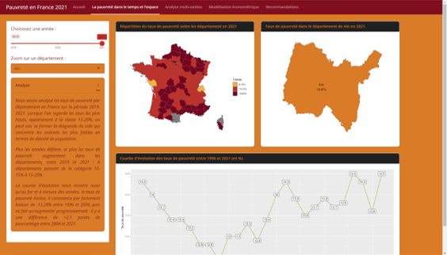
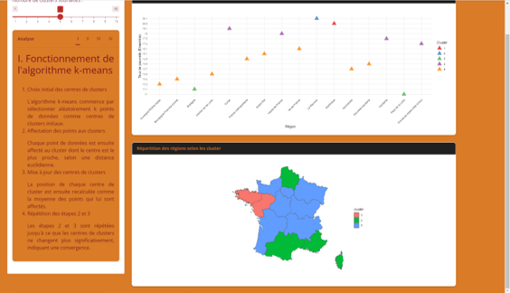
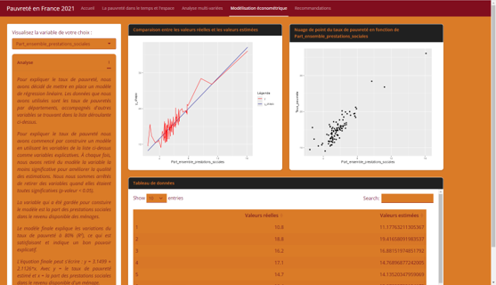

Multivariate analysis
The goal of this project was to study the poverty rate in France making our results accessible through a web interface. The final app needed to have the following features: displaying how the poverty rate changes over time and across regions, showing a multi-factor analysis, and the results of an econometric model.
The whole project was built with RShiny, an R library used to build web apps. We used INSEE data on the poverty rate in France to study how poverty is spread out at different geographical levels, and to track the changes over the years. In the app, some options let the user focus on a chosen area and pick a year to see its poverty rate. The data was then studied at the regional level: we used the k-means algorithm to build clusters of regions, to find and group together regions where the poverty rate behaves in a similar way. The user could choose the maximum number of clusters to group the regions into. The last model we built was a linear regression: starting from several variables about the poverty rate in France at the department level, we looked for the one that best explained the poverty rate by department, which turned out to be the percentage of social benefits that households receive in that department.
The project ended with a presentation of the app we built, including a demo of its features and a discussion of the results.
Skills learned:
- Deepening my knowledge of R
- Building a dynamic, interactive interface
- Building a tool made for decision-making
Illustrations

Analysis of the poverty rate over time and by geographic areas

Multivariate analysis

Econometric model